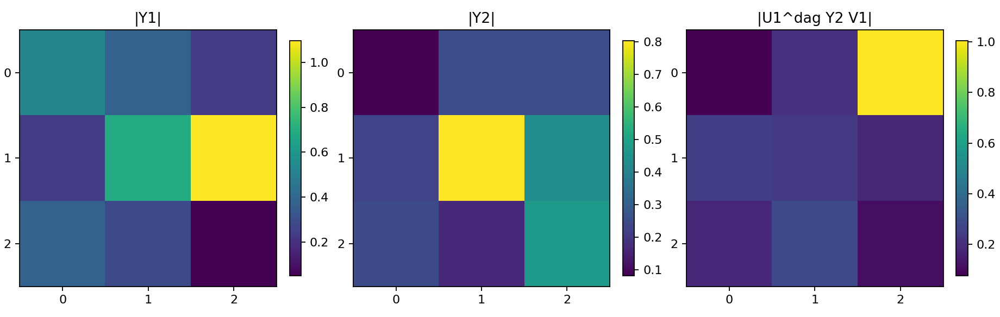
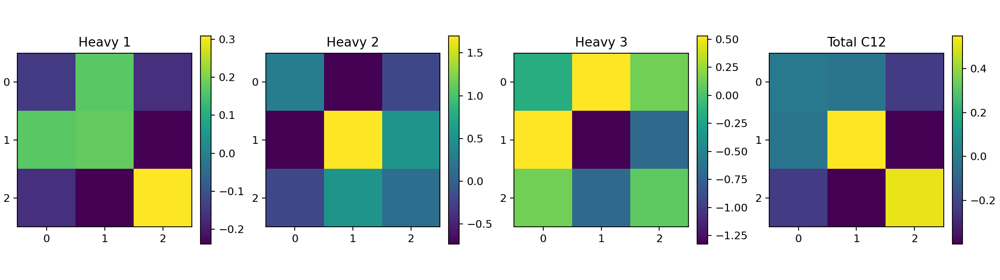
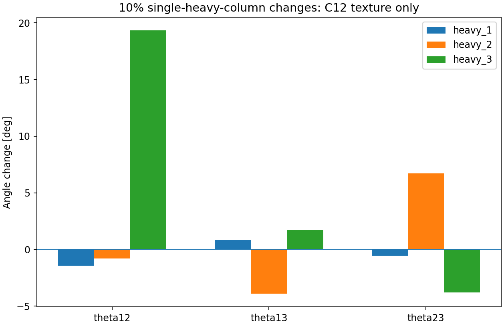

Only input Yukawa and heavy mass matrices are evaluated. These are not coupled-C5 or physical PMNS results. No RGEs were run.
||Y2||/||Y1|| = 0.737002. Y2 offdiag fraction in Y1 SVD basis = 0.972205. C12 cancellation ratio = 4.598470.


| Change | theta12 deg | theta13 deg | theta23 deg |
|---|---|---|---|
| global_y2 | -0.00000 | +0.00000 | -0.00000 |
| heavy_1 | -1.42982 | +0.81668 | -0.55442 |
| heavy_2 | -0.78004 | -3.91507 | +6.72215 |
| heavy_3 | +19.33777 | +1.69263 | -3.80571 |
